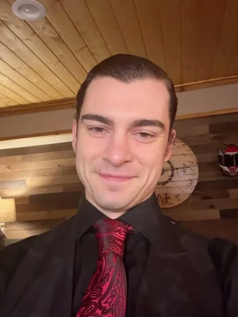
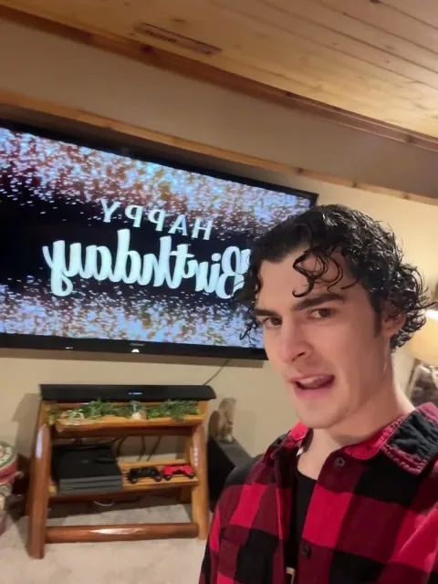
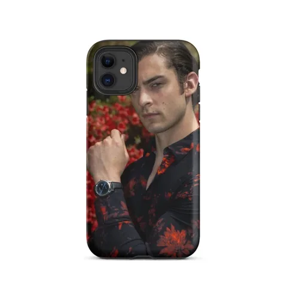
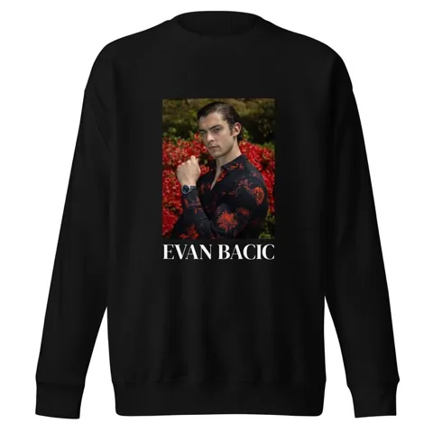
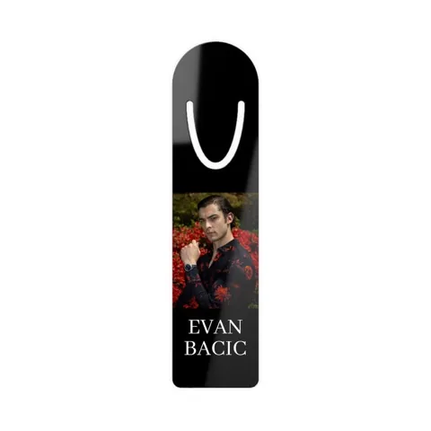
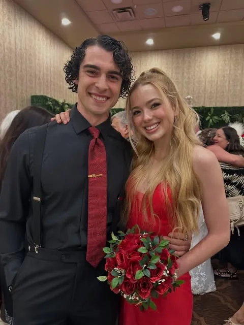
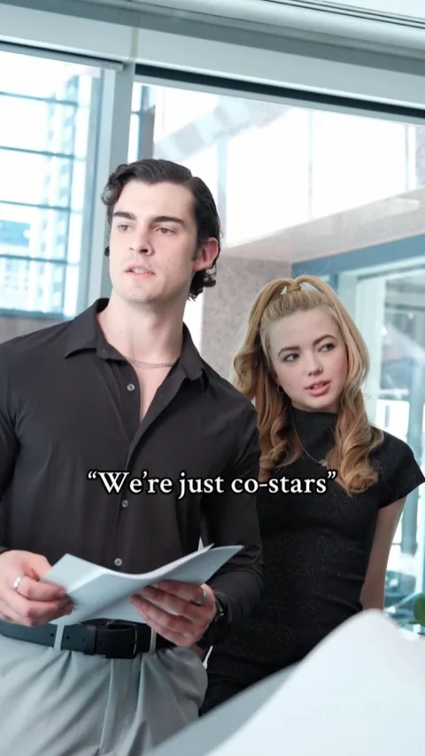
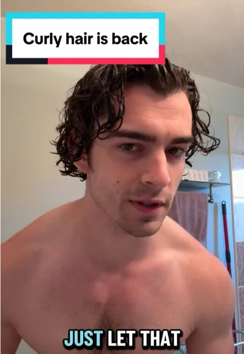
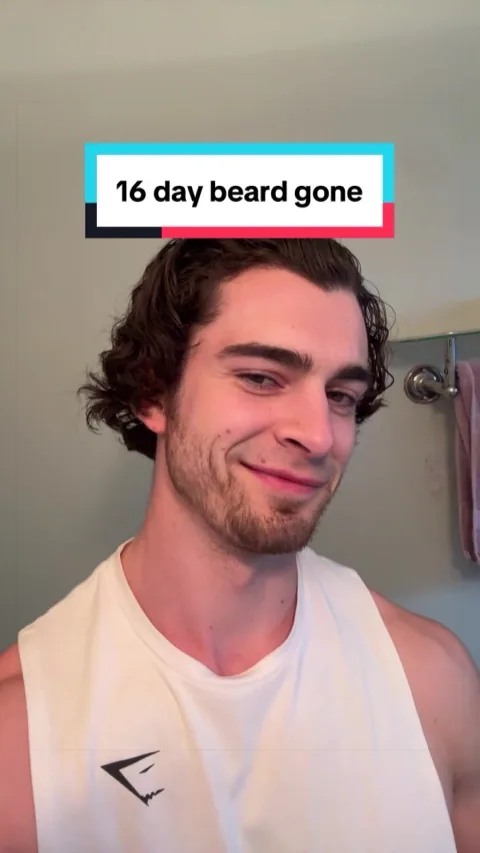

Demo reel
Demo reel · 3:57
The world’s number one vertical drama of 2025
as the lead of Mafia’s Tender Torture
0:00 / 3:57
1,000,000,000+
views across more than thirty leading roles
Photos
Credits
Vertical drama
The Island ClubLead · Dir. Sid Zanforlin
Mafia’s Tender TortureLead · Dir. Dom Cutrupi
Mafia’s Love Left Me No Way OutLead · Dir. Dom Cutrupi
Desires in FireLead · Dir. Shu Zhu
Forbidden FragranceLead · Dir. Ofir Lobel
An Heir Between UsLead · Dir. Vivian Ip
Mafia’s Forbidden CatchLead · Dir. Julia Ponce Diaz
Crashing Into My Magnate ExLead · Dir. Dom Cutrupi
Revenge of the Wedding PlannerLead · Dir. Antonio Cordero
My Contract LoverLead · Dir. Annie Liu
Flash Marriage with the Secret HeiressLead · Dir. Amy Yao
Victorian Heiress Survival GuideLead · Dir. Sonja Choi
Doormat No MoreLead · Dir. Shu Zhu
One Last Temptation Before I Say I DoLead · Dir. Brianne Norde Steward
Love VisaLead · Dir. Dom Cutrupi
After I Gave Lost Billionaire Mouth-to-MouthLead · Dir. Hugh Hua
100 Goodbyes, Never Turning BackLead · Dir. Leomax He
Destined to Rise: The Day I Fought for LoveLead · Dir. Dom Cutrupi
Fake Married to My Baby’s DaddyLead · Dir. Dom Cutrupi
This Time I Choose MyselfLead · Dir. Samantha MacAdam
Trapped Into Your Toxic LoveLead · Dir. Dom Cutrupi
Married My Twin Sister’s Rich FiancéLead · Dir. Leomax He
The Oscar Winner Is My ExLead · Dir. Sonja Choi
The Secretary’s SecretLead · Dir. Eric Zhang
She Is Not Your Wife: Love Actually All AroundLead · Dir. Sonja Choi
The Office Pushover Is the Real HeiressLead · Dir. Amy Yao
My Poor Ex-WifeLead · Dir. Dom Cutrupi
Angel Girl and Her Demon KnightLead · Dir. Eric Zhang
Kiss Me Kill MeLead · Dir. Enyi Zhu
Heiress’s Ballet RevengeLead · Dir. Dom Cutrupi
OTS with My GynecologistLead · Dir. Austin Herring
My Heart Dies From HomeLead · Dir. Shu Zhu
Obsessed with CEO DonorLead · Dir. Eric Zhang
My Substitute LoverSupporting lead · Dir. Sijing Yang
Go Live and Get My Daughter HomeSupporting lead · Dir. Fei Yu
The Secret She RaisedSupporting lead · Dir. Vivian Ip
The Comeback PlaySupporting lead · Dir. Mooji Liu
Alpha Queen RisingSupporting lead · Dir. Shu Zhu
The Alpha’s Heiress Is a MaidSupporting lead · Dir. Eric Zhang
Weapons! Women! Wild West!Supporting · Dir. Alan Pat
Love at 50: From Janitor to Billionaire’s WifeSupporting · Dir. Dom Cutrupi
Theatre
A Slight AcheLead · Dir. Mike McLaughlin
Fans & socials


CameoPersonal videos · ★ 5.0 (25 reviews)★ 5.0 · 25 reviewsBook a video


MerchThe signature collection · from $24Tees, sweats & moreShop the line
Instagram@evanbacic · 21K followers21K followersFollow


TikTok@evanbacic · 505K likes505K likesWatch